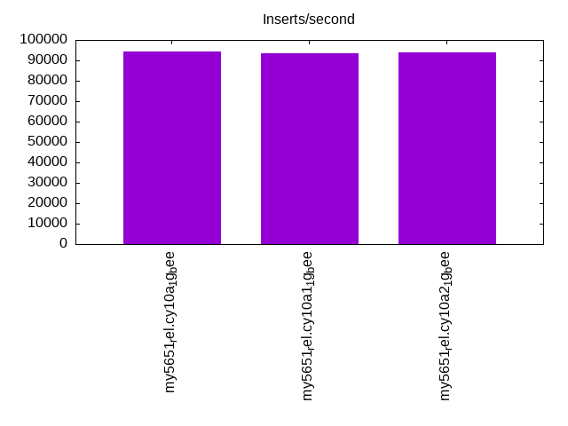
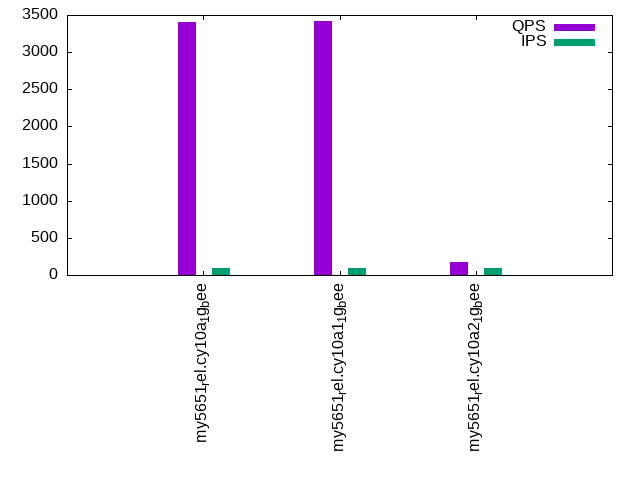

Introduction
This is a report for the insert benchmark with 20M docs and 1 client(s). It is generated by scripts (bash, awk, sed) and Tufte might not be impressed. An overview of the insert benchmark is here and a short update is here. Below, by DBMS, I mean DBMS+version.config. An example is my8020.c10b40 where my means MySQL, 8020 is version 8.0.20 and c10b40 is the name for the configuration file.
The test server has 8 AMD cores, 16G RAM and an NVMe SSD. It is described here as the Beelink. The benchmark was run with 1 client and there were 1 or 3 connections per client (1 for queries or inserts without rate limits, 1+1 for rate limited inserts+deletes). There is 1 table. It loads 20M rows without secondary indexes, creates secondary indexes, then inserts 50M rows with a delete per insert to avoid growing the table. It then does 3 read+write tests for 3600s each that do queries as fast as possible with 100, 500 and then 1000 inserts/second/client concurrent with the queries and 1000 deletes/second to avoid growing the table. The database is cached by the OS but not by InnoDB.
The tested DBMS are:
- my5651_rel.cy10a_1g_bee - InnoDB and MySQL 5.6.51, rel build, cy10a_1g_bee config, compiled with CMAKE_BUILD_TYPE=Release, base config
my5651_rel.cy10a2_1g_bee - InnoDB and MySQL 5.6.51, rel build, cy10a2_1g_bee config, compiled with CMAKE_BUILD_TYPE=Release, adds innodb_io_capacity=20k, innodb_io_capacity_max=40k
Contents
- Summary
- l.i0: load without secondary indexes
- l.x: create secondary indexes
- l.i1: continue load after secondary indexes created
- q100.1: range queries with 100 insert/s per client
- q500.1: range queries with 500 insert/s per client
- q1000.1: range queries with 1000 insert/s per client
Summary
The numbers are inserts/s for l.i0 and l.i1, indexed docs (or rows) /s for l.x and queries/s for q100, q500, q1000. The values are the average rate over the entire test for inserts (IPS) and queries (QPS). The range of values for IPS and QPS is split into 3 parts: bottom 25%, middle 50%, top 25%. Values in the bottom 25% have a red background, values in the top 25% have a green background and values in the middle have no color. A gray background is used for values that can be ignored because the DBMS did not sustain the target insert rate. Red backgrounds are not used when the minimum value is within 80% of the max value.
| dbms | l.i0 | l.x | l.i1 | q100.1 | q500.1 | q1000.1 |
|---|---|---|---|---|---|---|
| my5651_rel.cy10a_1g_bee | 94340 | 39105 | 940 | 3400 | 2596 | 1778 |
| my5651_rel.cy10a1_1g_bee | 93458 | 45578 | 919 | 3416 | 2558 | 1705 |
| my5651_rel.cy10a2_1g_bee | 93897 | 39335 | 990 | 180 | 125 | 113 |
This table has relative throughput, throughput for the DBMS relative to the DBMS in the first line, using the absolute throughput from the previous table. Values less than 0.95 have a yellow background. Values greater than 1.05 have a blue background.
| dbms | l.i0 | l.x | l.i1 | q100.1 | q500.1 | q1000.1 |
|---|---|---|---|---|---|---|
| my5651_rel.cy10a_1g_bee | 1.00 | 1.00 | 1.00 | 1.00 | 1.00 | 1.00 |
| my5651_rel.cy10a1_1g_bee | 0.99 | 1.17 | 0.98 | 1.00 | 0.99 | 0.96 |
| my5651_rel.cy10a2_1g_bee | 1.00 | 1.01 | 1.05 | 0.05 | 0.05 | 0.06 |
This lists the average rate of inserts/s for the tests that do inserts concurrent with queries. For such tests the query rate is listed in the table above. The read+write tests are setup so that the insert rate should match the target rate every second. Cells that are not at least 95% of the target have a red background to indicate a failure to satisfy the target.
| dbms | q100.1 | q500.1 | q1000.1 |
|---|---|---|---|
| my5651_rel.cy10a_1g_bee | 100 | 499 | 998 |
| my5651_rel.cy10a1_1g_bee | 100 | 499 | 999 |
| my5651_rel.cy10a2_1g_bee | 98 | 421 | 642 |
| target | 100 | 500 | 1000 |
l.i0
l.i0: load without secondary indexes. Graphs for performance per 1-second interval are here.
Average throughput:
Insert response time histogram: each cell has the percentage of responses that take <= the time in the header and max is the max response time in seconds. For the max column values in the top 25% of the range have a red background and in the bottom 25% of the range have a green background. The red background is not used when the min value is within 80% of the max value.
| dbms | 256us | 1ms | 4ms | 16ms | 64ms | 256ms | 1s | 4s | 16s | gt | max |
|---|---|---|---|---|---|---|---|---|---|---|---|
| my5651_rel.cy10a_1g_bee | 86.671 | 12.687 | 0.615 | 0.024 | 0.003 | 0.099 | |||||
| my5651_rel.cy10a1_1g_bee | 87.955 | 11.393 | 0.630 | 0.018 | 0.004 | 0.110 | |||||
| my5651_rel.cy10a2_1g_bee | 85.492 | 13.839 | 0.654 | 0.012 | 0.003 | 0.108 |
Performance metrics for the DBMS listed above. Some are normalized by throughput, others are not. Legend for results is here.
ips qps rps rmbps wps wmbps rpq rkbpq wpi wkbpi csps cpups cspq cpupq dbgb1 dbgb2 rss maxop p50 p99 tag 94340 0 826 3.2 72.5 26.3 0.009 0.035 0.001 0.286 10798 20.8 0.114 18 1.3 41.8 1.0 0.099 97886 58534 20m.my5651_rel.cy10a_1g_bee 93458 0 826 3.2 73.5 26.8 0.009 0.035 0.001 0.294 10605 20.9 0.113 18 1.3 41.8 1.0 0.110 97815 48346 20m.my5651_rel.cy10a1_1g_bee 93897 0 823 3.2 75.7 27.0 0.009 0.035 0.001 0.295 10814 20.7 0.115 18 1.3 41.8 1.0 0.108 96993 42053 20m.my5651_rel.cy10a2_1g_bee
l.x
l.x: create secondary indexes.
Average throughput:
Performance metrics for the DBMS listed above. Some are normalized by throughput, others are not. Legend for results is here.
ips qps rps rmbps wps wmbps rpq rkbpq wpi wkbpi csps cpups cspq cpupq dbgb1 dbgb2 rss maxop p50 p99 tag 39105 0 26 0.1 347.2 40.3 0.001 0.003 0.009 1.055 2135 5.2 0.055 11 2.7 43.2 1.1 0.022 NA NA 20m.my5651_rel.cy10a_1g_bee 45578 0 23 0.1 319.1 45.9 0.000 0.002 0.007 1.030 1701 5.8 0.037 10 2.7 43.2 1.1 0.015 NA NA 20m.my5651_rel.cy10a1_1g_bee 39335 0 26 0.1 344.1 39.6 0.001 0.003 0.009 1.031 2116 5.3 0.054 11 2.7 43.2 1.1 0.024 NA NA 20m.my5651_rel.cy10a2_1g_bee
l.i1
l.i1: continue load after secondary indexes created. Graphs for performance per 1-second interval are here.
Average throughput:

Insert response time histogram: each cell has the percentage of responses that take <= the time in the header and max is the max response time in seconds. For the max column values in the top 25% of the range have a red background and in the bottom 25% of the range have a green background. The red background is not used when the min value is within 80% of the max value.
| dbms | 256us | 1ms | 4ms | 16ms | 64ms | 256ms | 1s | 4s | 16s | gt | max |
|---|---|---|---|---|---|---|---|---|---|---|---|
| my5651_rel.cy10a_1g_bee | 2.024 | 43.311 | 37.486 | 11.652 | 5.507 | 0.021 | 1.779 | ||||
| my5651_rel.cy10a1_1g_bee | 1.477 | 41.181 | 39.977 | 11.824 | 5.502 | 0.039 | 1.714 | ||||
| my5651_rel.cy10a2_1g_bee | 6.562 | 36.159 | 39.717 | 13.104 | 4.417 | 0.040 | 1.894 |
Delete response time histogram: each cell has the percentage of responses that take <= the time in the header and max is the max response time in seconds. For the max column values in the top 25% of the range have a red background and in the bottom 25% of the range have a green background. The red background is not used when the min value is within 80% of the max value.
| dbms | 256us | 1ms | 4ms | 16ms | 64ms | 256ms | 1s | 4s | 16s | gt | max |
|---|---|---|---|---|---|---|---|---|---|---|---|
| my5651_rel.cy10a_1g_bee | 26.877 | 36.300 | 28.474 | 7.909 | 0.438 | 0.003 | 1.781 | ||||
| my5651_rel.cy10a1_1g_bee | 27.574 | 35.019 | 29.094 | 7.855 | 0.458 | 0.001 | 1.146 | ||||
| my5651_rel.cy10a2_1g_bee | 21.509 | 37.220 | 30.620 | 10.133 | 0.509 | 0.008 | 1.897 |
Performance metrics for the DBMS listed above. Some are normalized by throughput, others are not. Legend for results is here.
ips qps rps rmbps wps wmbps rpq rkbpq wpi wkbpi csps cpups cspq cpupq dbgb1 dbgb2 rss maxop p50 p99 tag 940 0 34 0.2 3094.8 93.4 0.036 0.207 3.292 101.751 8165 7.1 8.684 604 3.8 44.3 1.1 1.779 450 50 20m.my5651_rel.cy10a_1g_bee 919 0 33 0.2 3064.3 92.6 0.036 0.209 3.335 103.239 3618 7.1 3.938 618 3.8 44.3 1.1 1.714 549 50 20m.my5651_rel.cy10a1_1g_bee 990 0 36 0.2 3028.9 92.1 0.037 0.210 3.061 95.296 8118 7.5 8.204 606 4.6 45.2 1.1 1.894 749 50 20m.my5651_rel.cy10a2_1g_bee
q100.1
q100.1: range queries with 100 insert/s per client. Graphs for performance per 1-second interval are here.
Average throughput:
Query response time histogram: each cell has the percentage of responses that take <= the time in the header and max is the max response time in seconds. For max values in the top 25% of the range have a red background and in the bottom 25% of the range have a green background. The red background is not used when the min value is within 80% of the max value.
| dbms | 256us | 1ms | 4ms | 16ms | 64ms | 256ms | 1s | 4s | 16s | gt | max |
|---|---|---|---|---|---|---|---|---|---|---|---|
| my5651_rel.cy10a_1g_bee | 58.201 | 41.238 | 0.200 | 0.352 | 0.007 | nonzero | 0.234 | ||||
| my5651_rel.cy10a1_1g_bee | 59.696 | 39.754 | 0.183 | 0.356 | 0.011 | nonzero | 0.215 | ||||
| my5651_rel.cy10a2_1g_bee | 7.816 | 77.452 | 4.599 | 3.983 | 3.509 | 2.545 | 0.096 | 0.752 |
Insert response time histogram: each cell has the percentage of responses that take <= the time in the header and max is the max response time in seconds. For max values in the top 25% of the range have a red background and in the bottom 25% of the range have a green background. The red background is not used when the min value is within 80% of the max value.
| dbms | 256us | 1ms | 4ms | 16ms | 64ms | 256ms | 1s | 4s | 16s | gt | max |
|---|---|---|---|---|---|---|---|---|---|---|---|
| my5651_rel.cy10a_1g_bee | 15.792 | 69.569 | 14.458 | 0.097 | 0.083 | 0.792 | |||||
| my5651_rel.cy10a1_1g_bee | 13.389 | 72.111 | 14.319 | 0.181 | 0.134 | ||||||
| my5651_rel.cy10a2_1g_bee | 5.125 | 14.958 | 23.569 | 43.250 | 13.014 | 0.083 | 1.639 |
Delete response time histogram: each cell has the percentage of responses that take <= the time in the header and max is the max response time in seconds. For max values in the top 25% of the range have a red background and in the bottom 25% of the range have a green background. The red background is not used when the min value is within 80% of the max value.
| dbms | 256us | 1ms | 4ms | 16ms | 64ms | 256ms | 1s | 4s | 16s | gt | max |
|---|---|---|---|---|---|---|---|---|---|---|---|
| my5651_rel.cy10a_1g_bee | 47.431 | 42.694 | 9.722 | 0.111 | 0.042 | 0.497 | |||||
| my5651_rel.cy10a1_1g_bee | 51.819 | 40.431 | 7.681 | 0.069 | 0.067 | ||||||
| my5651_rel.cy10a2_1g_bee | 18.083 | 17.694 | 30.861 | 31.875 | 1.486 | 0.551 |
Performance metrics for the DBMS listed above. Some are normalized by throughput, others are not. Legend for results is here.
ips qps rps rmbps wps wmbps rpq rkbpq wpi wkbpi csps cpups cspq cpupq dbgb1 dbgb2 rss maxop p50 p99 tag 100 3400 5 0.0 772.1 22.8 0.002 0.010 7.736 233.746 14912 12.4 4.385 292 3.8 44.3 1.1 0.234 3421 2703 20m.my5651_rel.cy10a_1g_bee 100 3416 5 0.0 776.0 22.9 0.001 0.009 7.776 234.680 13995 12.4 4.097 290 3.8 44.3 1.1 0.215 3438 2332 20m.my5651_rel.cy10a1_1g_bee 98 180 5 0.0 2471.0 69.0 0.027 0.167 25.163 719.533 7146 4.9 39.702 2178 4.6 45.2 1.1 0.752 96 0 20m.my5651_rel.cy10a2_1g_bee
q500.1
q500.1: range queries with 500 insert/s per client. Graphs for performance per 1-second interval are here.
Average throughput:
Query response time histogram: each cell has the percentage of responses that take <= the time in the header and max is the max response time in seconds. For max values in the top 25% of the range have a red background and in the bottom 25% of the range have a green background. The red background is not used when the min value is within 80% of the max value.
| dbms | 256us | 1ms | 4ms | 16ms | 64ms | 256ms | 1s | 4s | 16s | gt | max |
|---|---|---|---|---|---|---|---|---|---|---|---|
| my5651_rel.cy10a_1g_bee | 48.694 | 49.925 | 0.097 | 1.266 | 0.018 | 0.045 | |||||
| my5651_rel.cy10a1_1g_bee | 48.941 | 49.660 | 0.097 | 1.279 | 0.024 | 0.042 | |||||
| my5651_rel.cy10a2_1g_bee | 4.267 | 76.029 | 5.676 | 4.964 | 4.975 | 3.931 | 0.157 | 0.858 |
Insert response time histogram: each cell has the percentage of responses that take <= the time in the header and max is the max response time in seconds. For max values in the top 25% of the range have a red background and in the bottom 25% of the range have a green background. The red background is not used when the min value is within 80% of the max value.
| dbms | 256us | 1ms | 4ms | 16ms | 64ms | 256ms | 1s | 4s | 16s | gt | max |
|---|---|---|---|---|---|---|---|---|---|---|---|
| my5651_rel.cy10a_1g_bee | 12.756 | 73.131 | 14.111 | 0.003 | 0.065 | ||||||
| my5651_rel.cy10a1_1g_bee | 10.758 | 73.542 | 15.669 | 0.031 | 0.106 | ||||||
| my5651_rel.cy10a2_1g_bee | 5.953 | 28.308 | 21.958 | 31.992 | 11.781 | 0.008 | 1.131 |
Delete response time histogram: each cell has the percentage of responses that take <= the time in the header and max is the max response time in seconds. For max values in the top 25% of the range have a red background and in the bottom 25% of the range have a green background. The red background is not used when the min value is within 80% of the max value.
| dbms | 256us | 1ms | 4ms | 16ms | 64ms | 256ms | 1s | 4s | 16s | gt | max |
|---|---|---|---|---|---|---|---|---|---|---|---|
| my5651_rel.cy10a_1g_bee | 54.956 | 36.006 | 9.039 | 0.053 | |||||||
| my5651_rel.cy10a1_1g_bee | 55.472 | 34.650 | 9.867 | 0.011 | 0.074 | ||||||
| my5651_rel.cy10a2_1g_bee | 35.689 | 17.003 | 25.108 | 21.453 | 0.747 | 0.607 |
Performance metrics for the DBMS listed above. Some are normalized by throughput, others are not. Legend for results is here.
ips qps rps rmbps wps wmbps rpq rkbpq wpi wkbpi csps cpups cspq cpupq dbgb1 dbgb2 rss maxop p50 p99 tag 499 2596 22 0.1 3018.6 91.0 0.008 0.055 6.052 186.891 16590 13.5 6.392 416 3.8 44.3 1.1 0.045 2605 1822 20m.my5651_rel.cy10a_1g_bee 499 2558 22 0.1 3033.3 91.4 0.009 0.057 6.082 187.752 12500 13.6 4.887 425 3.8 44.3 1.1 0.042 2573 1727 20m.my5651_rel.cy10a1_1g_bee 421 125 23 0.2 2239.1 63.3 0.188 1.529 5.315 153.777 6754 5.2 54.206 3339 4.6 45.2 1.1 0.858 48 0 20m.my5651_rel.cy10a2_1g_bee
q1000.1
q1000.1: range queries with 1000 insert/s per client. Graphs for performance per 1-second interval are here.
Average throughput:
Query response time histogram: each cell has the percentage of responses that take <= the time in the header and max is the max response time in seconds. For max values in the top 25% of the range have a red background and in the bottom 25% of the range have a green background. The red background is not used when the min value is within 80% of the max value.
| dbms | 256us | 1ms | 4ms | 16ms | 64ms | 256ms | 1s | 4s | 16s | gt | max |
|---|---|---|---|---|---|---|---|---|---|---|---|
| my5651_rel.cy10a_1g_bee | 31.162 | 65.610 | 0.404 | 2.761 | 0.058 | 0.005 | 0.249 | ||||
| my5651_rel.cy10a1_1g_bee | 29.652 | 67.066 | 0.403 | 2.811 | 0.065 | 0.003 | nonzero | 0.260 | |||
| my5651_rel.cy10a2_1g_bee | 2.575 | 71.694 | 10.555 | 5.552 | 5.103 | 4.319 | 0.202 | 0.713 |
Insert response time histogram: each cell has the percentage of responses that take <= the time in the header and max is the max response time in seconds. For max values in the top 25% of the range have a red background and in the bottom 25% of the range have a green background. The red background is not used when the min value is within 80% of the max value.
| dbms | 256us | 1ms | 4ms | 16ms | 64ms | 256ms | 1s | 4s | 16s | gt | max |
|---|---|---|---|---|---|---|---|---|---|---|---|
| my5651_rel.cy10a_1g_bee | 19.529 | 66.161 | 13.858 | 0.425 | 0.026 | 0.403 | |||||
| my5651_rel.cy10a1_1g_bee | 16.742 | 67.789 | 15.114 | 0.343 | 0.013 | 0.408 | |||||
| my5651_rel.cy10a2_1g_bee | 9.946 | 30.135 | 24.386 | 30.153 | 5.381 | 0.927 |
Delete response time histogram: each cell has the percentage of responses that take <= the time in the header and max is the max response time in seconds. For max values in the top 25% of the range have a red background and in the bottom 25% of the range have a green background. The red background is not used when the min value is within 80% of the max value.
| dbms | 256us | 1ms | 4ms | 16ms | 64ms | 256ms | 1s | 4s | 16s | gt | max |
|---|---|---|---|---|---|---|---|---|---|---|---|
| my5651_rel.cy10a_1g_bee | 59.237 | 31.407 | 9.238 | 0.118 | 0.186 | ||||||
| my5651_rel.cy10a1_1g_bee | 60.882 | 29.356 | 9.667 | 0.096 | 0.148 | ||||||
| my5651_rel.cy10a2_1g_bee | 34.281 | 19.787 | 25.251 | 20.001 | 0.679 | 0.510 |
Performance metrics for the DBMS listed above. Some are normalized by throughput, others are not. Legend for results is here.
ips qps rps rmbps wps wmbps rpq rkbpq wpi wkbpi csps cpups cspq cpupq dbgb1 dbgb2 rss maxop p50 p99 tag 998 1778 45 0.3 4781.7 145.1 0.025 0.179 4.791 148.913 17033 14.4 9.579 648 3.8 44.3 1.1 0.249 1822 304 20m.my5651_rel.cy10a_1g_bee 999 1705 44 0.3 4701.3 142.9 0.026 0.186 4.708 146.485 10316 14.4 6.051 676 3.8 44.3 1.1 0.260 1742 368 20m.my5651_rel.cy10a1_1g_bee 642 113 27 0.2 2206.9 63.2 0.242 1.392 3.436 100.786 6709 5.9 59.480 4184 4.6 45.2 1.1 0.713 32 0 20m.my5651_rel.cy10a2_1g_bee
l.i0
l.i0: load without secondary indexes
Performance metrics for all DBMS, not just the ones listed above. Some are normalized by throughput, others are not. Legend for results is here.
ips qps rps rmbps wps wmbps rpq rkbpq wpi wkbpi csps cpups cspq cpupq dbgb1 dbgb2 rss maxop p50 p99 tag 94340 0 826 3.2 72.5 26.3 0.009 0.035 0.001 0.286 10798 20.8 0.114 18 1.3 41.8 1.0 0.099 97886 58534 20m.my5651_rel.cy10a_1g_bee 93458 0 826 3.2 73.5 26.8 0.009 0.035 0.001 0.294 10605 20.9 0.113 18 1.3 41.8 1.0 0.110 97815 48346 20m.my5651_rel.cy10a1_1g_bee 93897 0 823 3.2 75.7 27.0 0.009 0.035 0.001 0.295 10814 20.7 0.115 18 1.3 41.8 1.0 0.108 96993 42053 20m.my5651_rel.cy10a2_1g_bee
l.x
l.x: create secondary indexes
Performance metrics for all DBMS, not just the ones listed above. Some are normalized by throughput, others are not. Legend for results is here.
ips qps rps rmbps wps wmbps rpq rkbpq wpi wkbpi csps cpups cspq cpupq dbgb1 dbgb2 rss maxop p50 p99 tag 39105 0 26 0.1 347.2 40.3 0.001 0.003 0.009 1.055 2135 5.2 0.055 11 2.7 43.2 1.1 0.022 NA NA 20m.my5651_rel.cy10a_1g_bee 45578 0 23 0.1 319.1 45.9 0.000 0.002 0.007 1.030 1701 5.8 0.037 10 2.7 43.2 1.1 0.015 NA NA 20m.my5651_rel.cy10a1_1g_bee 39335 0 26 0.1 344.1 39.6 0.001 0.003 0.009 1.031 2116 5.3 0.054 11 2.7 43.2 1.1 0.024 NA NA 20m.my5651_rel.cy10a2_1g_bee
l.i1
l.i1: continue load after secondary indexes created
Performance metrics for all DBMS, not just the ones listed above. Some are normalized by throughput, others are not. Legend for results is here.
ips qps rps rmbps wps wmbps rpq rkbpq wpi wkbpi csps cpups cspq cpupq dbgb1 dbgb2 rss maxop p50 p99 tag 940 0 34 0.2 3094.8 93.4 0.036 0.207 3.292 101.751 8165 7.1 8.684 604 3.8 44.3 1.1 1.779 450 50 20m.my5651_rel.cy10a_1g_bee 919 0 33 0.2 3064.3 92.6 0.036 0.209 3.335 103.239 3618 7.1 3.938 618 3.8 44.3 1.1 1.714 549 50 20m.my5651_rel.cy10a1_1g_bee 990 0 36 0.2 3028.9 92.1 0.037 0.210 3.061 95.296 8118 7.5 8.204 606 4.6 45.2 1.1 1.894 749 50 20m.my5651_rel.cy10a2_1g_bee
q100.1
q100.1: range queries with 100 insert/s per client
Performance metrics for all DBMS, not just the ones listed above. Some are normalized by throughput, others are not. Legend for results is here.
ips qps rps rmbps wps wmbps rpq rkbpq wpi wkbpi csps cpups cspq cpupq dbgb1 dbgb2 rss maxop p50 p99 tag 100 3400 5 0.0 772.1 22.8 0.002 0.010 7.736 233.746 14912 12.4 4.385 292 3.8 44.3 1.1 0.234 3421 2703 20m.my5651_rel.cy10a_1g_bee 100 3416 5 0.0 776.0 22.9 0.001 0.009 7.776 234.680 13995 12.4 4.097 290 3.8 44.3 1.1 0.215 3438 2332 20m.my5651_rel.cy10a1_1g_bee 98 180 5 0.0 2471.0 69.0 0.027 0.167 25.163 719.533 7146 4.9 39.702 2178 4.6 45.2 1.1 0.752 96 0 20m.my5651_rel.cy10a2_1g_bee
q500.1
q500.1: range queries with 500 insert/s per client
Performance metrics for all DBMS, not just the ones listed above. Some are normalized by throughput, others are not. Legend for results is here.
ips qps rps rmbps wps wmbps rpq rkbpq wpi wkbpi csps cpups cspq cpupq dbgb1 dbgb2 rss maxop p50 p99 tag 499 2596 22 0.1 3018.6 91.0 0.008 0.055 6.052 186.891 16590 13.5 6.392 416 3.8 44.3 1.1 0.045 2605 1822 20m.my5651_rel.cy10a_1g_bee 499 2558 22 0.1 3033.3 91.4 0.009 0.057 6.082 187.752 12500 13.6 4.887 425 3.8 44.3 1.1 0.042 2573 1727 20m.my5651_rel.cy10a1_1g_bee 421 125 23 0.2 2239.1 63.3 0.188 1.529 5.315 153.777 6754 5.2 54.206 3339 4.6 45.2 1.1 0.858 48 0 20m.my5651_rel.cy10a2_1g_bee
q1000.1
q1000.1: range queries with 1000 insert/s per client
Performance metrics for all DBMS, not just the ones listed above. Some are normalized by throughput, others are not. Legend for results is here.
ips qps rps rmbps wps wmbps rpq rkbpq wpi wkbpi csps cpups cspq cpupq dbgb1 dbgb2 rss maxop p50 p99 tag 998 1778 45 0.3 4781.7 145.1 0.025 0.179 4.791 148.913 17033 14.4 9.579 648 3.8 44.3 1.1 0.249 1822 304 20m.my5651_rel.cy10a_1g_bee 999 1705 44 0.3 4701.3 142.9 0.026 0.186 4.708 146.485 10316 14.4 6.051 676 3.8 44.3 1.1 0.260 1742 368 20m.my5651_rel.cy10a1_1g_bee 642 113 27 0.2 2206.9 63.2 0.242 1.392 3.436 100.786 6709 5.9 59.480 4184 4.6 45.2 1.1 0.713 32 0 20m.my5651_rel.cy10a2_1g_bee
l.i0
- l.i0: load without secondary indexes
- Legend for results is here.
- Each entry lists the percentage of responses that fit in that bucket (slower than max time for previous bucket, faster than min time for next bucket).
Insert response time histogram
256us 1ms 4ms 16ms 64ms 256ms 1s 4s 16s gt max tag 0.000 86.671 12.687 0.615 0.024 0.003 0.000 0.000 0.000 0.000 0.099 my5651_rel.cy10a_1g_bee 0.000 87.955 11.393 0.630 0.018 0.004 0.000 0.000 0.000 0.000 0.110 my5651_rel.cy10a1_1g_bee 0.000 85.492 13.839 0.654 0.012 0.003 0.000 0.000 0.000 0.000 0.108 my5651_rel.cy10a2_1g_bee
l.x
- l.x: create secondary indexes
- Legend for results is here.
- Each entry lists the percentage of responses that fit in that bucket (slower than max time for previous bucket, faster than min time for next bucket).
TODO - determine whether there is data for create index response time
l.i1
- l.i1: continue load after secondary indexes created
- Legend for results is here.
- Each entry lists the percentage of responses that fit in that bucket (slower than max time for previous bucket, faster than min time for next bucket).
Insert response time histogram
256us 1ms 4ms 16ms 64ms 256ms 1s 4s 16s gt max tag 0.000 0.000 2.024 43.311 37.486 11.652 5.507 0.021 0.000 0.000 1.779 my5651_rel.cy10a_1g_bee 0.000 0.000 1.477 41.181 39.977 11.824 5.502 0.039 0.000 0.000 1.714 my5651_rel.cy10a1_1g_bee 0.000 0.000 6.562 36.159 39.717 13.104 4.417 0.040 0.000 0.000 1.894 my5651_rel.cy10a2_1g_bee
Delete response time histogram
256us 1ms 4ms 16ms 64ms 256ms 1s 4s 16s gt max tag 0.000 0.000 26.877 36.300 28.474 7.909 0.438 0.003 0.000 0.000 1.781 my5651_rel.cy10a_1g_bee 0.000 0.000 27.574 35.019 29.094 7.855 0.458 0.001 0.000 0.000 1.146 my5651_rel.cy10a1_1g_bee 0.000 0.000 21.509 37.220 30.620 10.133 0.509 0.008 0.000 0.000 1.897 my5651_rel.cy10a2_1g_bee
q100.1
- q100.1: range queries with 100 insert/s per client
- Legend for results is here.
- Each entry lists the percentage of responses that fit in that bucket (slower than max time for previous bucket, faster than min time for next bucket).
Query response time histogram
256us 1ms 4ms 16ms 64ms 256ms 1s 4s 16s gt max tag 58.201 41.238 0.200 0.352 0.007 nonzero 0.000 0.000 0.000 0.000 0.234 my5651_rel.cy10a_1g_bee 59.696 39.754 0.183 0.356 0.011 nonzero 0.000 0.000 0.000 0.000 0.215 my5651_rel.cy10a1_1g_bee 7.816 77.452 4.599 3.983 3.509 2.545 0.096 0.000 0.000 0.000 0.752 my5651_rel.cy10a2_1g_bee
Insert response time histogram
256us 1ms 4ms 16ms 64ms 256ms 1s 4s 16s gt max tag 0.000 0.000 15.792 69.569 14.458 0.097 0.083 0.000 0.000 0.000 0.792 my5651_rel.cy10a_1g_bee 0.000 0.000 13.389 72.111 14.319 0.181 0.000 0.000 0.000 0.000 0.134 my5651_rel.cy10a1_1g_bee 0.000 0.000 5.125 14.958 23.569 43.250 13.014 0.083 0.000 0.000 1.639 my5651_rel.cy10a2_1g_bee
Delete response time histogram
256us 1ms 4ms 16ms 64ms 256ms 1s 4s 16s gt max tag 0.000 0.000 47.431 42.694 9.722 0.111 0.042 0.000 0.000 0.000 0.497 my5651_rel.cy10a_1g_bee 0.000 0.000 51.819 40.431 7.681 0.069 0.000 0.000 0.000 0.000 0.067 my5651_rel.cy10a1_1g_bee 0.000 0.000 18.083 17.694 30.861 31.875 1.486 0.000 0.000 0.000 0.551 my5651_rel.cy10a2_1g_bee
q500.1
- q500.1: range queries with 500 insert/s per client
- Legend for results is here.
- Each entry lists the percentage of responses that fit in that bucket (slower than max time for previous bucket, faster than min time for next bucket).
Query response time histogram
256us 1ms 4ms 16ms 64ms 256ms 1s 4s 16s gt max tag 48.694 49.925 0.097 1.266 0.018 0.000 0.000 0.000 0.000 0.000 0.045 my5651_rel.cy10a_1g_bee 48.941 49.660 0.097 1.279 0.024 0.000 0.000 0.000 0.000 0.000 0.042 my5651_rel.cy10a1_1g_bee 4.267 76.029 5.676 4.964 4.975 3.931 0.157 0.000 0.000 0.000 0.858 my5651_rel.cy10a2_1g_bee
Insert response time histogram
256us 1ms 4ms 16ms 64ms 256ms 1s 4s 16s gt max tag 0.000 0.000 12.756 73.131 14.111 0.003 0.000 0.000 0.000 0.000 0.065 my5651_rel.cy10a_1g_bee 0.000 0.000 10.758 73.542 15.669 0.031 0.000 0.000 0.000 0.000 0.106 my5651_rel.cy10a1_1g_bee 0.000 0.000 5.953 28.308 21.958 31.992 11.781 0.008 0.000 0.000 1.131 my5651_rel.cy10a2_1g_bee
Delete response time histogram
256us 1ms 4ms 16ms 64ms 256ms 1s 4s 16s gt max tag 0.000 0.000 54.956 36.006 9.039 0.000 0.000 0.000 0.000 0.000 0.053 my5651_rel.cy10a_1g_bee 0.000 0.000 55.472 34.650 9.867 0.011 0.000 0.000 0.000 0.000 0.074 my5651_rel.cy10a1_1g_bee 0.000 0.000 35.689 17.003 25.108 21.453 0.747 0.000 0.000 0.000 0.607 my5651_rel.cy10a2_1g_bee
q1000.1
- q1000.1: range queries with 1000 insert/s per client
- Legend for results is here.
- Each entry lists the percentage of responses that fit in that bucket (slower than max time for previous bucket, faster than min time for next bucket).
Query response time histogram
256us 1ms 4ms 16ms 64ms 256ms 1s 4s 16s gt max tag 31.162 65.610 0.404 2.761 0.058 0.005 0.000 0.000 0.000 0.000 0.249 my5651_rel.cy10a_1g_bee 29.652 67.066 0.403 2.811 0.065 0.003 nonzero 0.000 0.000 0.000 0.260 my5651_rel.cy10a1_1g_bee 2.575 71.694 10.555 5.552 5.103 4.319 0.202 0.000 0.000 0.000 0.713 my5651_rel.cy10a2_1g_bee
Insert response time histogram
256us 1ms 4ms 16ms 64ms 256ms 1s 4s 16s gt max tag 0.000 0.000 19.529 66.161 13.858 0.425 0.026 0.000 0.000 0.000 0.403 my5651_rel.cy10a_1g_bee 0.000 0.000 16.742 67.789 15.114 0.343 0.013 0.000 0.000 0.000 0.408 my5651_rel.cy10a1_1g_bee 0.000 0.000 9.946 30.135 24.386 30.153 5.381 0.000 0.000 0.000 0.927 my5651_rel.cy10a2_1g_bee
Delete response time histogram
256us 1ms 4ms 16ms 64ms 256ms 1s 4s 16s gt max tag 0.000 0.000 59.237 31.407 9.238 0.118 0.000 0.000 0.000 0.000 0.186 my5651_rel.cy10a_1g_bee 0.000 0.000 60.882 29.356 9.667 0.096 0.000 0.000 0.000 0.000 0.148 my5651_rel.cy10a1_1g_bee 0.000 0.000 34.281 19.787 25.251 20.001 0.679 0.000 0.000 0.000 0.510 my5651_rel.cy10a2_1g_bee